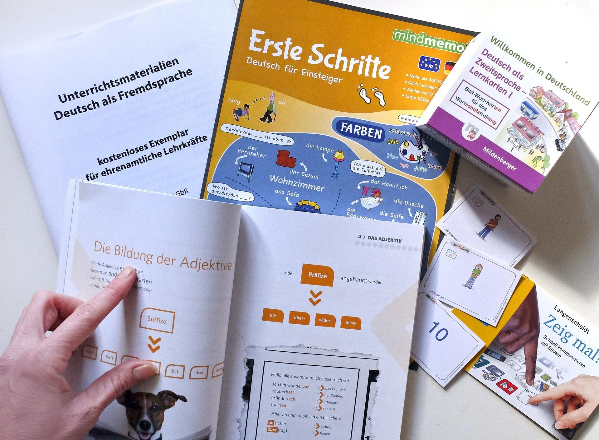
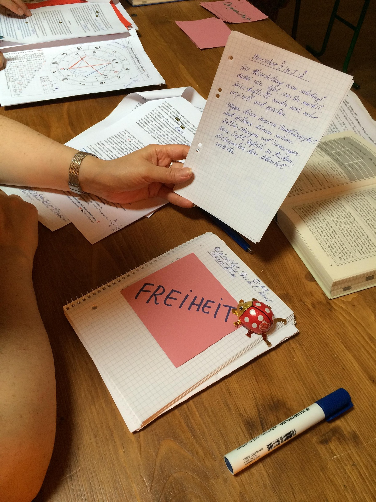

Les méthodes et la routine qui m'ont permis d'atteindre le B1 en 3 mois

L'apprentissage d'une langue peut sembler intimidant au départ, mais c'est aussi une aventure de liberté. Plusieurs raisons peuvent t'amener à apprendre en autodidacte telles que le coût, la flexibilité ou encore l'autonomie. Le 1er décembre 2025 je me suis lancée dans une aventure folle : celle d'apprendre l'allemand. Au départ, je ne comptais pas le faire en autodidacte. Cependant, il n'existait pas de centre d'étude de langue allemande dans ma ville. Et puisque je devais absolument apprendre, j'ai accepté le défi et aujourd'hui, je suis très fière de moi car mon objectif a été atteint.
Je vais partager avec toi quelques astuces pour y arriver toi aussi. Lis cet article jusqu'au bout et tu auras toutes les ressources pour te lancer dès aujourd'hui.
Tu n'as pas besoin d'être naturellement polyglotte pour pouvoir apprendre une nouvelle langue. Comme dans chaque projet que l'on veut réussir dans la vie, tu dois absolument te fixer un objectif clair et précis dès le départ. Sans objectif, il est inutile de se lancer car tu n'iras nulle part. Comme objectif, tu peux décider de terminer :
En d'autres termes, ton objectif doit être suffisamment grand pour te sembler inatteignable mais assez pragmatique pour ne pas te décourager. Mon objectif était de composer le B1 en 3 mois et je l'ai atteint. Cependant, il ne faut pas penser que se fixer des objectifs est suffisant, il faut aussi travailler dur pour les atteindre. Si tu commences à inventer des excuses avant même d'avoir commencé, tu n'y arriveras pas.
C'est pourquoi tu dois avoir une bonne raison pour laquelle tu apprends cette nouvelle langue. Pourquoi veux-tu apprendre l'allemand ? Est-ce pour saisir des opportunités professionnelles, pour faire des études dans ce pays, pour suivre une formation ou simplement pour être polyglotte ? En fonction de la raison pour laquelle tu veux apprendre, ta détermination peut varier. Tu dois savoir que le nombre de temps nécessaire pour terminer un niveau varie considérablement d'une personne à l'autre. De plus, ce n'est pas parce que selon le programme officiel cela est d'un certain nombre d'heures que forcément celà te prendra ce nombre de temps.
Dans les centres Goethe Institut par exemple, il faut 10 semaines pour terminer un niveau. Pour les personnes qui se forment dans ces centres, c'est tout à fait normal mais cela ne veut pas dire qu'il te faudra exactement le même nombre de temps. De plus, tu as la possibilité de cumuler 800 heures d'apprentissage sur 3 mois au lieu de 12.
📚Pour cela, il faudra bien choisir ses outils d'apprentissage. Tu dois développer simultanément les 4 compétences nécessaires pour maîtriser une langue c'est-à-dire : le parlé, l'écrit, l'écoute et la lecture. Pour cela, tu peux étudier avec un livre, une application spécialisée ou un site. Ce qui a totalement changé la donne pour moi c'est Deutsch Welle, une application conçue pour les personnes souhaitant immigrer en Allemagne. C'est riche et très pratique.
Il y a un phénomène très répandu qu'on observe chez les apprenants d'une nouvelle langue. Qu'il s'agisse d'apprendre l'anglais, le français ou même l'allemand, on entend très souvent cette phrase “je comprends mais je ne parle pas”. C'est pourquoi dès le début de ton apprentissage, tu ne dois rien négliger sinon tu vas te retrouver exactement dans la même situation après quelques mois. Tu veux parler correctement ou tu veux juste comprendre ? Fais ton choix dès maintenant.
Si ton objectif est de pouvoir parler aussi bien que tu comprends, alors continue de lire car j'ai des pépites pour toi. Il faut à la fois consommer et produire dans ton aventure d'apprentissage de l'allemand. Consommer signifie lire régulièrement des articles, des annonces et autres contenus en allemand et aussi écouter des podcasts et des vidéos sur des contenus variés. Il ne s'agit pas de lire des livres de grammaire ou de regarder des vidéos de conjugaison mais surtout de lire et écouter des sujets qui t'intéressent vraiment. Je vais te dire un secret, dès lors que j'ai l'impression que je suis obligée de lire ou d'écouter un podcast, je ferme tout et je passe à autre chose. Dès le début de mon aventure, j'ai fait un pacte avec moi-même : je devais apprendre l'allemand en m'amusant donc quand ça devient une corvée, j'arrête. Ainsi, j'ai pû tenir sur la durée et rester motivée.
💬S'agissant de la production, fait l'effort d'écrire aussi souvent que possible et de parler sans tenir compte des erreurs que tu fais. J'ai une seule devise “j'apprends pour maîtriser la langue et non pour avoir des certificats”.

Même si tu écris la même chose chaque jour, au bout de quelques jours, tu verras que tu corriges tes erreurs tout seul. Parle toi, cela s'appelle faire du “shadowing”. Quand tu as du trajet à faire, profite de ce moment pour te parler à voix haute. Si ce n'est pas à haute voix, ce sera totalement inutile. Tu dois t'entendre parler. Dès lors que tu te sens plus confiant, cherche des partenaires tandem avec qui discuter. Il peut s'agir de natif allemand ou d'autres apprenants comme toi. Mais, n'attends pas trop longtemps. Ce serait vraiment très bénéfique si tu pouvais commencer cette étape dès le deuxième mois de ton apprentissage car tu sauras déjà faire des phrases simples.
Plus tu pratiques avec des natifs, plus tu gagnes en confiance et tu t'améliores. Sache que tu feras beaucoup d'erreurs, mais concentre toi sur la communication, ne cherche pas à avoir une grammaire parfaite, cherche à faire passer ton message. Tu as utilisé “die” à la place de “das”? Ce n'est pas grave. Tu ne connais pas la différence entre l'accusatif et le datif ? Ce n'est rien, tu auras le même problème même après 5 ans d'apprentissage car même les natifs ont ce même problème 😅. Personne ne juge quelqu'un qui apprend à fond. Et si quelqu'un se moque de toi, demande-lui s'il a déjà appris une nouvelle langue un jour et tu verras que sa réponse sera “non” dans 95 % des cas.
Atteindre le niveau B1 ou B2 en quelques mois seulement est tout à fait possible avec un peu de discipline et les bons outils. J'ai atteint le niveau B1 en 3 mois en partant de A1 et ce n'est pas pour me vanter. Cela m'a valu des réveils à 4 heures du matin pendant que tout le monde dormait. Tu vas te demander pourquoi je me réveillais à 4 heure au lieu d'étudier à un autre moment de la journée. Eh bien la réponse est simple. J'étais institutrice de maternelle et donc je devais aller à l'école à 7h30 du matin pour rentrer à 14h30. À côté de celà, je suis rédactrice web, donc je devais respecter les deadlines avec mes clients tout en essayant de mettre sur pied un service spécialisé dans mon boulot. De plus, il me fallait acquérir des compétences en programmation pour étoffer mon portfolio de candidatures pour des formations et études en alternance en Allemagne.
Quand on a un emploi du temps aussi fou, seul la discipline peut nous permettre d'atteindre nos objectifs. Donc, j'ai créé une routine simple 3 à 5 heures d'allemand par jour avec réveil obligatoire à 4h du matin. Mon apprentissage à travers l'application Deutsch Welle me permettait de pratiquer l'écoute, l'écrit et la lecture. Sur le chemin de l'école, je pratiquais le parlé toute seule.
J'aime écrire, donc dès que j'ai l'occasion, je produis des textes libres et j'utilise aussi l'IA pour me générer des exercices ciblés que je traite et fais corriger par celle-ci. Tu dois absolument créer une routine en fonction de tes objectifs. Ce n'est pas l'heure de trouver des excuses. Si regarder une série jusque tard la nuit est plus important que ton objectif, alors oui, tu n'as pas assez de temps. Si passer du temps avec des amis est mieux que construire ton avenir, alors oui, c'est vrai que ton temps est limité. Mais pose-toi la question “dans 6 mois qu'est-ce qui aura encore de l'importance ?”
Si dès le début de ton apprentissage tu te rends compte que tu peux parler facilement sans aucune erreur alors que tu viens juste de commencer, comment te sentirais tu ? Ce sont des choses qui arrivent peut-être mais c'est très rare. C'est pourquoi tu dois accepter dès le départ que l'erreur fait partie du processus. Tu ne feras pas de phrases correctes avant un certain temps. Et si tu es ambitieux, tu voudras utiliser des structures que tu ne comprends même pas encore car tu veux t'exprimer comme tu le fais dans ta langue maternelle. Ta phrase aura parfois l'air trop longue et tu vas te perdre à essayer de conclure. Mais au milieu de tout ça, ton cerveau sera en train de se développer, tu seras en train d'acquérir de nouvelles capacités. Plus tu parleras, plus tu feras d'erreurs et plus tu apprendras.
Si tu ne fais pas d'erreurs, sache que tu réfléchis trop et que tu n'apprends pas véritablement. Parler une nouvelle langue c'est exercer son cerveau à répondre même quand il ne sait pas comment terminer la phrase. C'est savoir que tu fais des erreurs mais continuer quand même. Quand tu as des doutes, pose-toi une seule question “est-ce que je communique ? Est-ce que mon interlocuteur comprend ce que je veux dire ?” Si la réponse est “oui” alors, tu es sur la bonne voie.
🎯Fixe-toi de petits objectifs facile à atteindre comme :
Cela te permet de rester motivé et de savoir que tu progresses.
Voici comment se déroule une journée typique dans ma vie d'apprenante d'allemand en autodidacte :
Bien sûr, il y a des jours où je ne suis pas aussi disciplinée et où je me permets de faire une pause, mais dans l'ensemble, c'est ainsi que j'ai réussi à atteindre mes objectifs en un temps record.
Etant donné que chacun a son propre rythme d'apprentissage, voici une petite routine journalière que tu peux adapter à ta réalité:
L'autonomie est une force dont on a encore du mal à maîtriser la puissance. Pendant que ton ami apprend dans une école de langue et évolue selon le programme scolaire, tu es libre de faire 3 heures par jour au lieu de 2 heures par semaine pour le même objectif. Le but n'est pas seulement d'aller vite, mais surtout de tout acquérir à la fois et de mettre cela immédiatement en pratique.
Si l'idée d'apprendre l'allemand ou une nouvelle compétence te taraude l'esprit depuis quelques années, c'est le moment de te lancer. Qu'est-ce que tu as à perdre à essayer ? Si tu as déjà commencé ton aventure d'apprentissage, envoie moi un petit message dans la section "contact" pour t'exercer à écrire.
Hallo! Mein Name ist Liticia. Seit Dezember 2025 lerne ich Deutsch intensif. Bis jetzt mache ich noch viel Fehler, aber das ist nicht wichtig. Ich habe eine strenge Routine, um mein Deutsch zu verbessern. Wenn du Deutsch lernen möchte, kannst du mir eine Nachricht senden. Ich bin für dich da.